Review together R1: silent round, reveal at once, decide
Summary
A team can now review a game together from the match thread. Each player answers four short prompts alone. Nobody's words reach anyone else before the reveal, the facilitator's included. Players write together under a 3-minute timer, or alone within 24 hours, on a phone too.
At the reveal every note appears at once, in one 220 ms fade. "What didn't go to plan" shows no name, avatar or "yours" marker, for anyone. The team +1s, near-duplicates are suggested for merging, members vote, at most three items are accepted, and each gets an owner. Closing writes the review with M159's stamps. A five-member e2e spec searches every context for names and ids. No migration: the four new tables come from the baseline schema.
Least-confident decisions
- Account deletion keeps anonymous cards under "Former member". The privacy sentence says you can "export or delete" them, so it is only half true. Question 1 below.
- Voices and the nudge ignore the anonymous prompt. A privacy review found "5 of 5 voices" could unmask a writer, so only signed prompts count. A member who wrote only anonymous cards is not counted as a voice.
- Harness rows are not all green. A1 to A3 and V1 pass. I1, I2, I6, I8, V2, V3 fail on every page; the atelier traced each to the harness. Question 3 below.
- Names. "Review together" now means only the session. The match page button "Review as a team" became "Write a review". I overruled the atelier here. Question 4 below.
- A session closes 24 h after the match starts, or 24 h after opening if opened later. "Reveal now" works without a timed round.
- Deleting an action item and re-saving the review brings it back. This was already so before this round.
- A merged group's +1 count is the first card's count.
Status per item
| # | Item | State |
|---|---|---|
| 0 | Atelier intake (references, brief, 8 recipe cards) | shipped |
| 1 | Data model: four tables, no migration | shipped |
| 2 | Short-poll transport and presence | shipped |
| 3 | Open from the match thread | shipped |
| 4 | Silent round, timed or async | shipped |
| 5 | Reveal, +1, merge suggestions | shipped |
| 6 | Decide: votes, accept up to 3, owners checked | shipped |
| 7 | Generated review on close | shipped |
| 8 | Voices line and quiet nudge | shipped |
| 9 | Anonymity guarantee and tests | shipped |
| 10 | Privacy rows (stored, listed, export, deletion) | shipped |
| 11 | CHANGELOG and docs | shipped |
| R2 | Timeline moments, lanes crossed, carry-forward | R2, unchanged |
CI
Commit 37a7936 (run 43518892716): all five jobs green; e2e 192 expected, 0 unexpected, 0 flaky, 0 skipped; no slow, panic or error lines. Tip 1aab82c (fix 977542c, run 43524977997): check and e2e green with the same counts. Image, ops-scripts and style jobs for 977542c were not visible to the author. Four earlier CI rounds failed only in the new spec.
Atelier verdicts
- Round 1: FIX. F4 blocked (a capture defect: markers showed the author's letter). Others did not block.
- Round 2: 7 of 8 cards PASS (V5, V7, V8 included). The writing card stayed FIX on F1 (sealed sentence was inline).
- Post-round fix 977542c made it a block paragraph. The 390 frame now shows a gap of about 24 px; all 8 cards pass.
- Reveal sequence: one wrapper, all groups at once, instant under reduced motion, no per-person tally.
Questions for you
Landing question first: merge the branch once the fresh verifier says PASS? Recommended: yes. Merged is not live; deploy is a separate card. Then the four react questions:
1. Account deletion and anonymous cards
Suggestion: delete a person's anonymous notes on account deletion and keep signed ones as "Former member". The sentence then holds as written; show it to your adviser. The other option is to keep all as "Former member" and reword the sentence.
2. Share link for a session review
Suggestion: decided items only, as now. Add unnamed notes in R2 only if a team asks. Notes were written for the team, and a link can travel.
3. Harness rows
Suggestion: accept the atelier's ruling note and fix the harness separately. The rows fail the same on every page. The other option is to fix the harness first, which delays landing.
4. Names
Suggestion: keep "Review together" as the chalk action and "Write it alone" as the quiet link. The other option makes "alone" the main action.
Match Day: review step
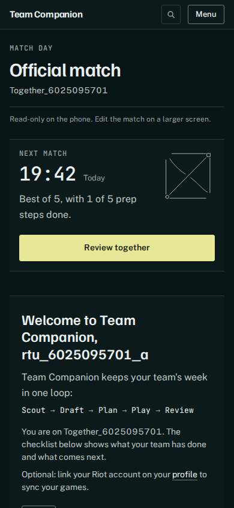
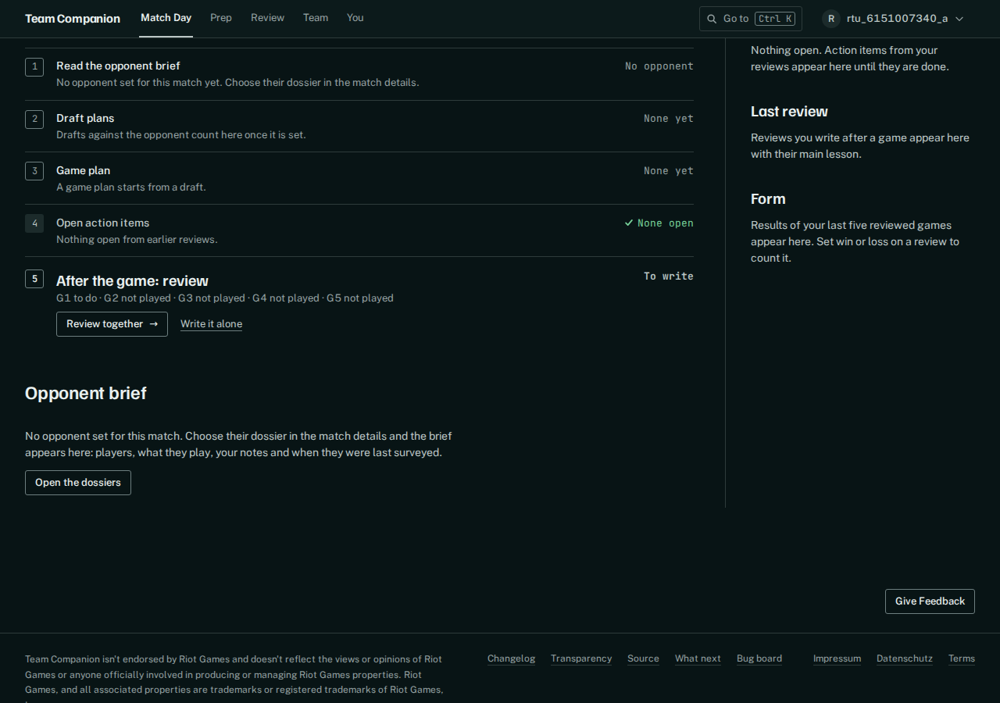
Writing alone (sealed)
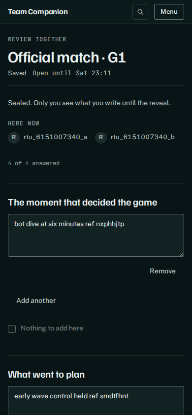
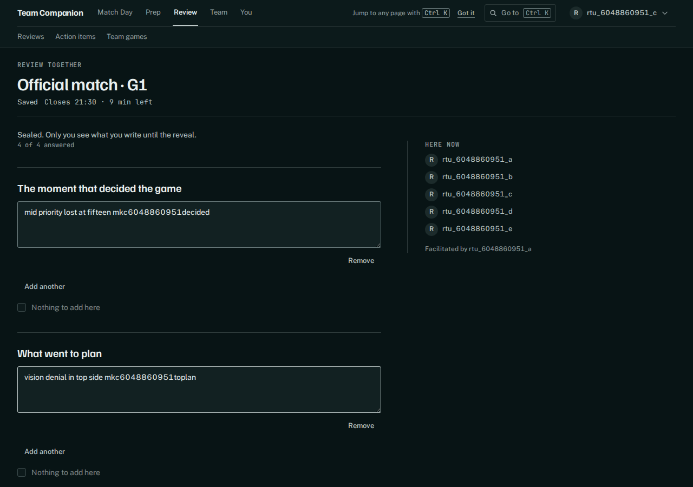
Facilitator view and quiet nudge
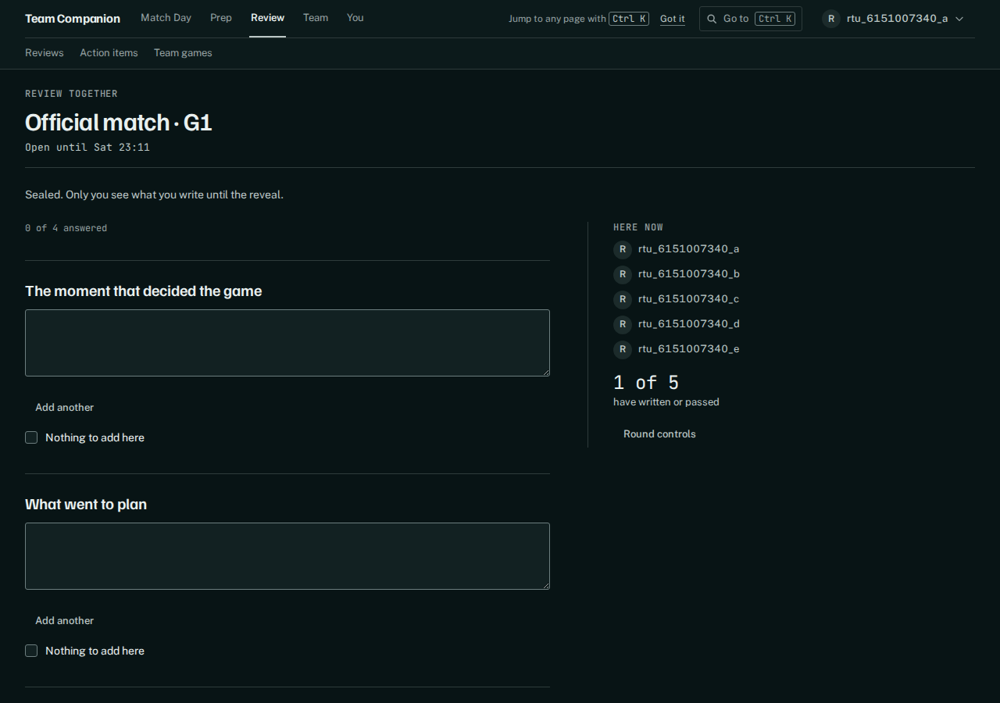
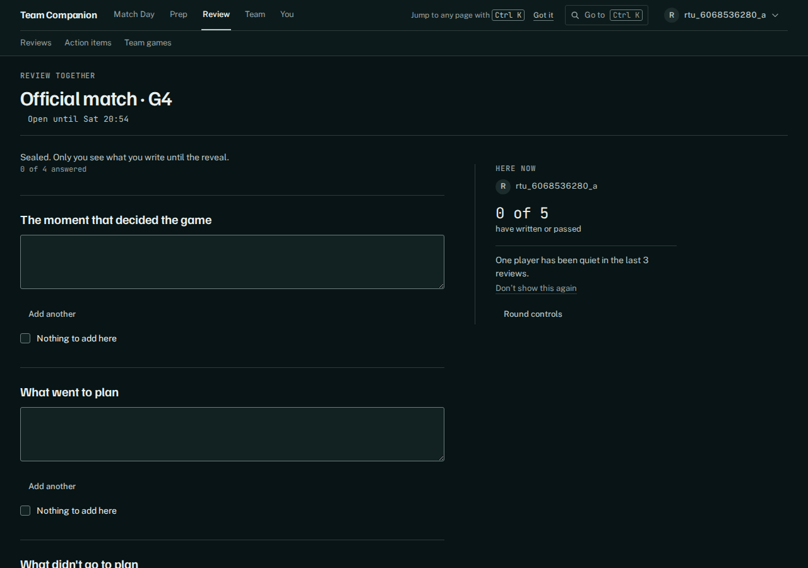
Reveal
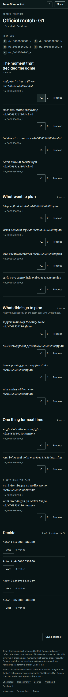
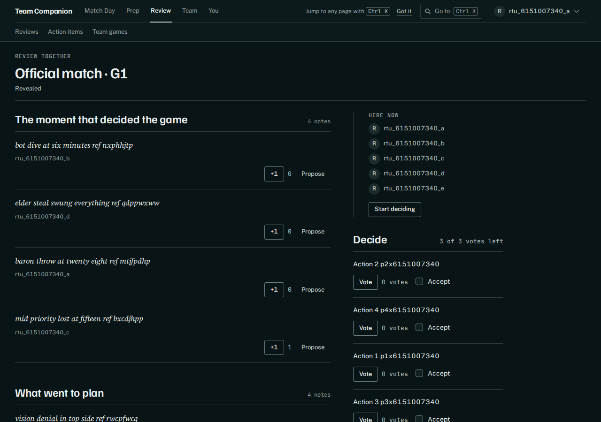
Reveal sequence (1280, one 220 ms fade)
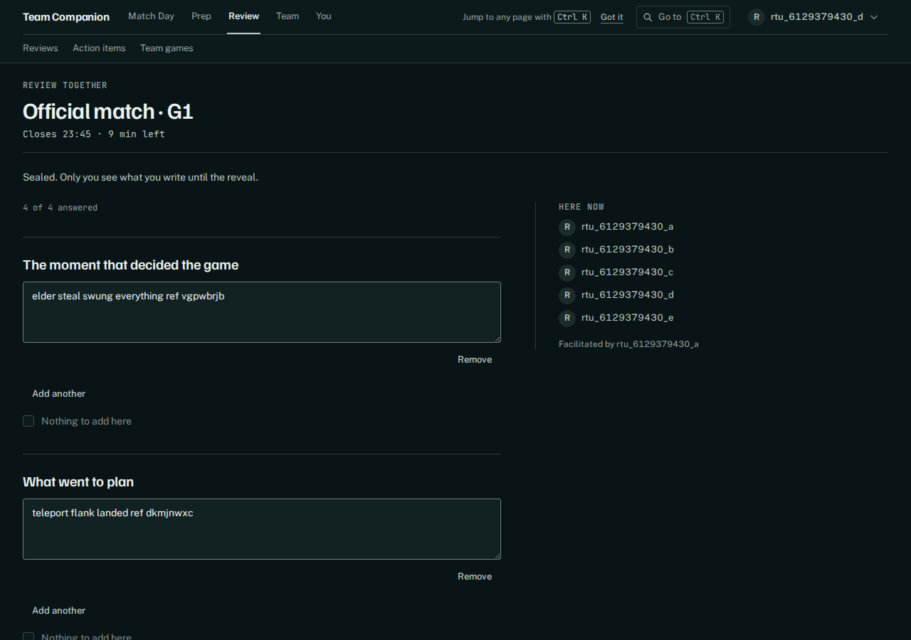
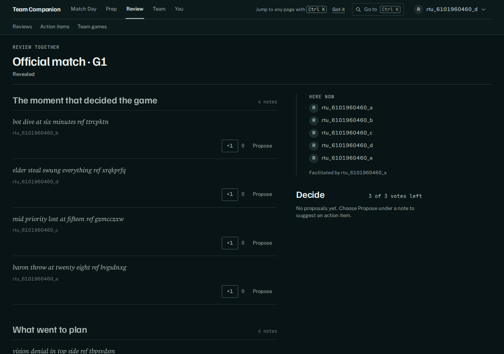
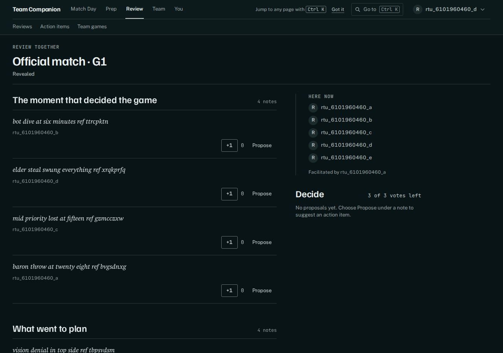
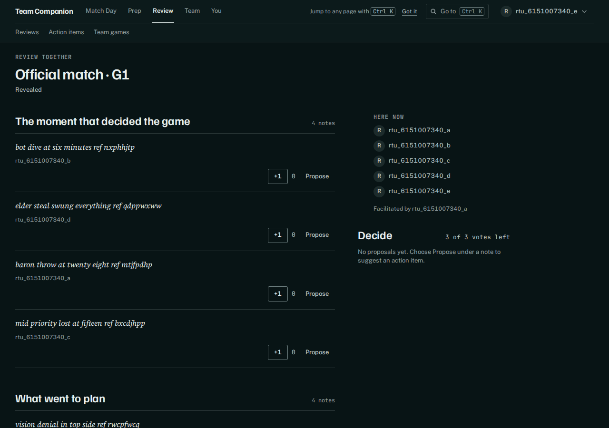
Decide
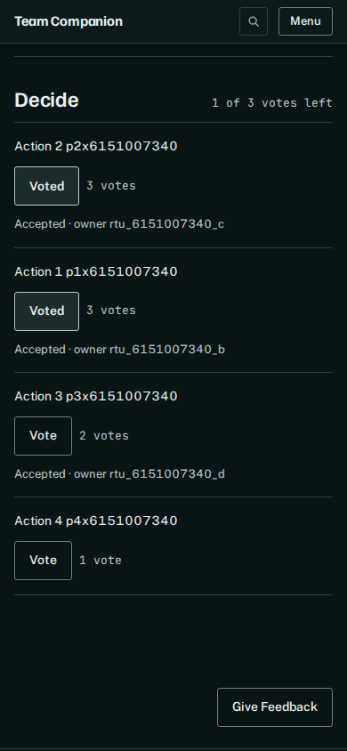
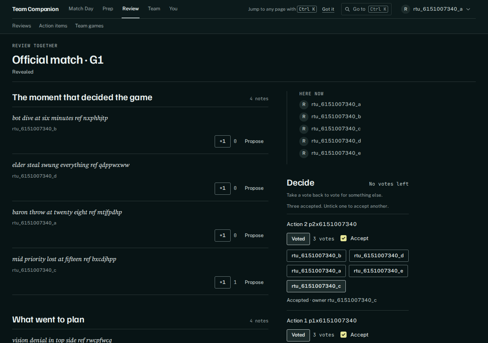
Generated review
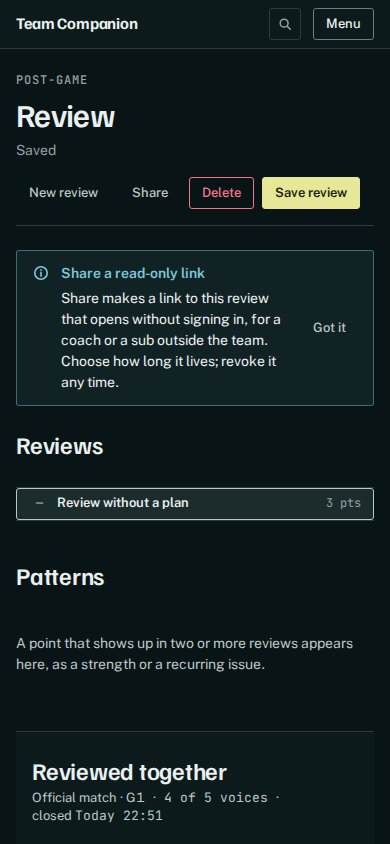
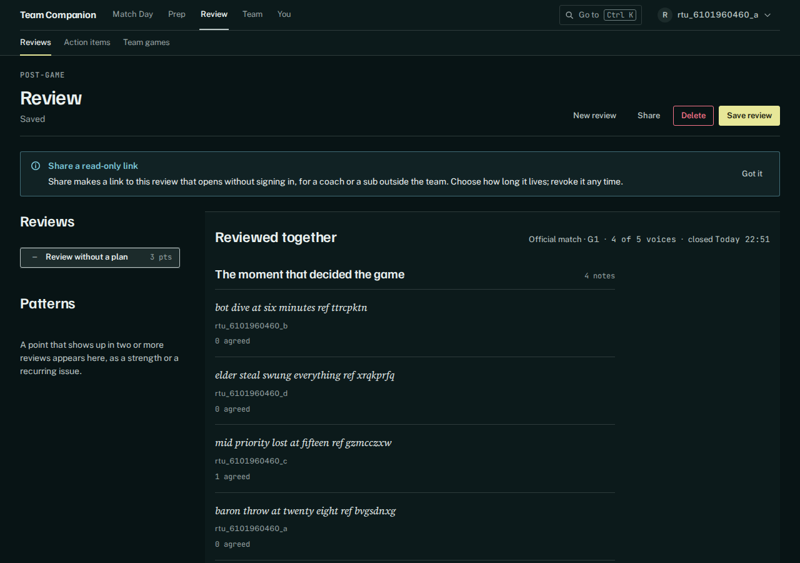
Before (proxy)
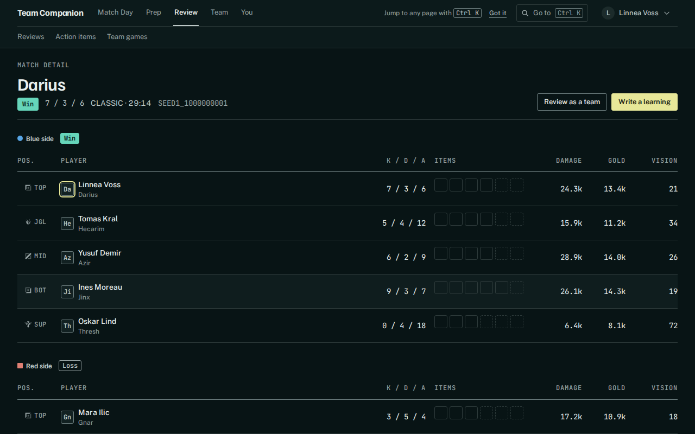